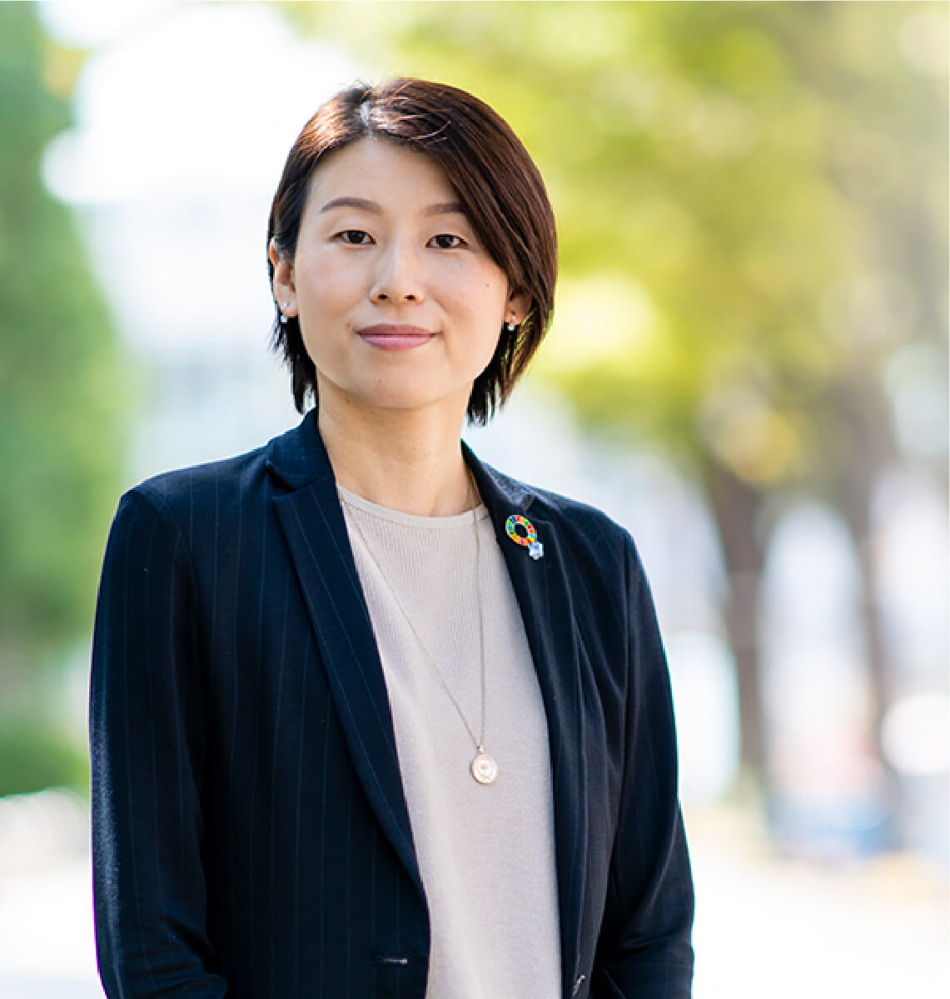
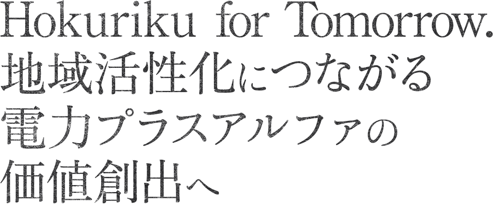
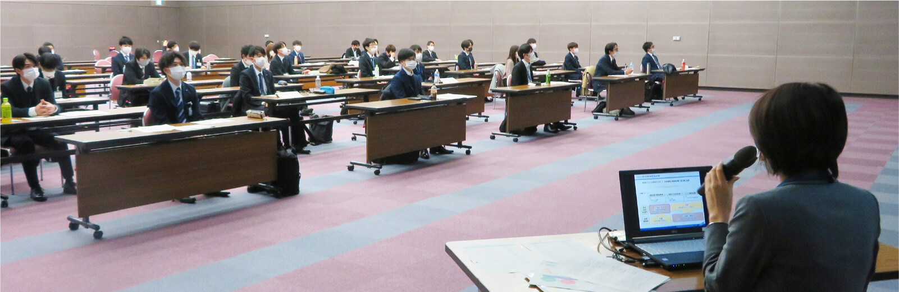
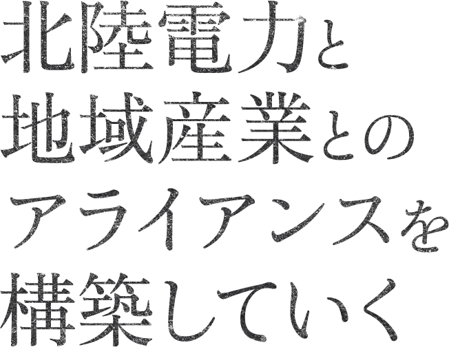
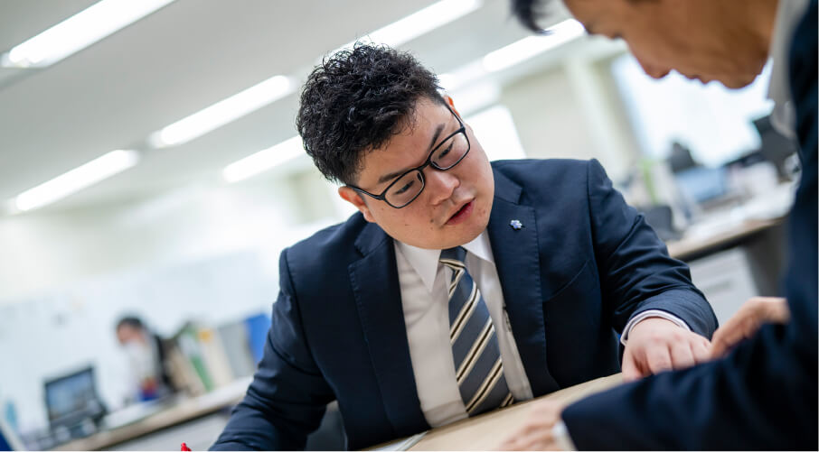
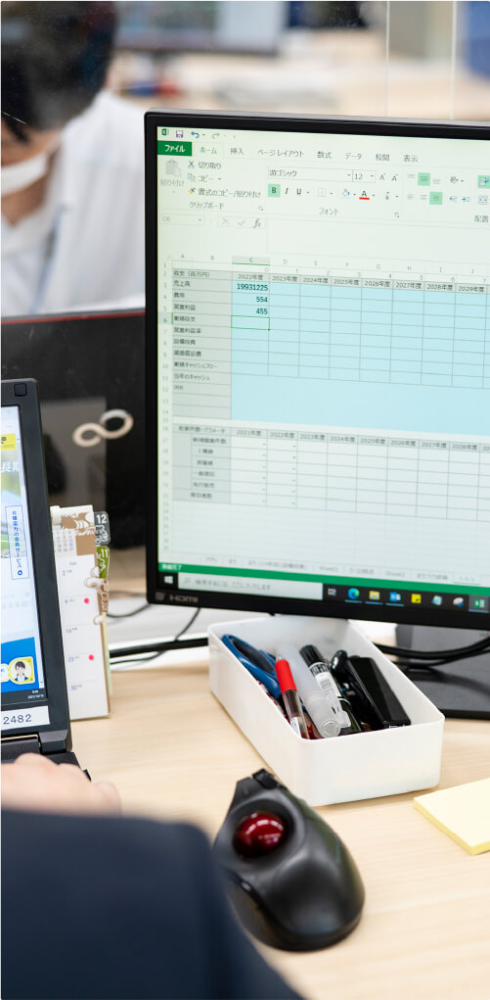
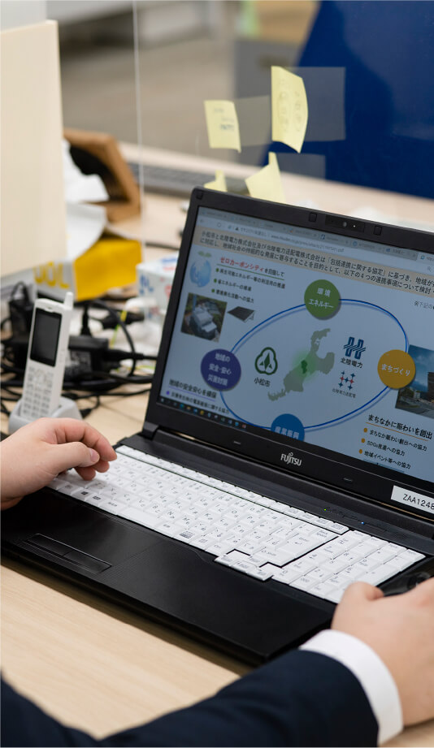

事業開発部は、北陸電力グループが一丸となって事業領域の拡大にチャレンジする中、その旗振り役として「新たな発想やアイデアが将来の事業の柱となる」という大きな期待と責任を胸に、幅広い部門・年代のメンバーが主体的・積極的に業務に取り組んでいます。
〈新規事業開発〉
地域の課題解決につながる新規事業や、新たなサービスを検討しています。アイデアを出すところから始まり、市場調査、採算性評価、他社・他部署との連携や協業を経て、一つのサービスが出来上がります。
〈事業投資〉
国内外における事業投資について、社外の専門家とも連携しながら、投資のストラクチャーや事業性等の検討を行っています。投資実行に向け調査・分析及び事業化の調整・実施・支援など、事業投資に係る業務について幅広く取り組んでいます。
〈グループ事業支援〉
グループ各社の新規事業創出や利益拡大にむけた経営課題をともに解決し、「北陸電力グループ」として成長を目指します。


事業開発部 事業創造チーム社浦 里香
入社 / 2004年
工学部卒業
2018年7月 経理部 予算統括チーム 副課長
2020年10月 事業開発部 新規事業推進チーム 副課長
2021年7月 事業開発部 事業創造チーム 副課長
兼 新価値創造研究所 研究企画・知的財産チーム 副課長
経歴は取材時点のものです
 歩んできたキャリアは？
歩んできたキャリアは？
私の学生時代は、特別高圧のお客さまの電力自由化が始まったばかりで、変革の初期と言える時期でした。これからもっと大きな変化を迎える電力業界ならば、力をつけた頃には非常にチャレンジングな仕事ができると考え、志望したのを覚えています。入社後は、営業部、燃料部、経理部、事業開発部と同じ会社の中でもさまざまな業務を担い、また英国への海外研修を経験。幅広い挑戦機会の中で、多様な部門の視座を身につけるキャリアを歩んできました。キャリアの中で、二度の産休・育休を取得し、復帰しています。
 現在の仕事、
現在の仕事、
プロとして意識していることは？
北陸3県の合計人口は2000年代前半をピークに減少カーブに転じ、2020年には300万人を下回っています。また、北陸地域は少子化と若年層の県外流出による生産年齢人口減少、老年人口増加などの課題が全国の中でも早く顕在化してくるフェーズに入っています。このような状況に危機感を抱き、北陸をもっと魅力的で活力ある人々が集う地域にしていきたいと考え取り組んでいます。日本全国が同じような課題を抱える状況で、北陸が一つの新しいモデルとなっていく。そのために産業や地域社会活性化へ向けて歩んでいるのが北陸電力であり、私たち事業開発部門は価値創造への取組みを先導しています。経済・産業をリードし、エネルギーを提供していく企業として、挑むテーマはEVや不動産、ICTなど多岐にわたり、過去には農業における完全人工光型植物工場の立ち上げなどにも携わってきました。直近では、自治会組織の運営デジタル化に取り組み、平時・災害時にコミュニケーションツールとなる地域ICTプラットフォーム事業推進を主導し、自治体への導入を進めています。
 これから挑みたいことは？
これから挑みたいことは？
人口動態推移や地域経済動向など、北陸地域の課題は多々ありますが、ここに手を打つことなしには、状況は同じままです。未来を少しでも良くできるのは、現在の私たちの行動に他なりません。この地に暮らす人々を本当に思うからこそ、目指すのは、地域全体にヒト・モノ・カネを行き渡らせ、北陸をたしかな意味で活性化させること。目下の地域ICTプラットフォームはその一つに過ぎず、これからもより多様な事業を進めていきます。そのために、ときには厳しい判断も行い、真に地域に貢献できる電力プラスアルファの価値創造に挑んでいきたいと思います。
 学生へメッセージを
学生へメッセージを
何百のアイデアがあっても実現に至るのは1つか2つ、事業開発はそのような厳しい世界です。新たなチャレンジをしていくことは想像以上に大変ですが、その苦しみを乗り越えてこそ、出会える喜びがあります。みなさんにも、そのような仕事の面白さをぜひ体験してほしいと心から願っています。

新規事業創出に向けた検討会議
北陸電力送配電の事業領域拡大チームと合同で新規事業検討会議を実施。コストや技術、パートナー選定など多岐にわたる観点をもとに、北陸電力の未来を担うビジネスを考えていきます。
展示会での情報収集
社外に出て最新動向に触れる時間を設けるようにしています。たとえば先日は農業分野の展示会を訪れ、大企業からスタートアップまで多様なサービスを調査、検討しました。
現地調査
協業先や自治体が保有する遊休地を訪れることも。担当案件の一つに地域の教育機関跡地活用があり、現地へと足を運び既存設備を活用してなにができるのかを考えています。

社内研修
事業開発は事業開発部だけで行っていくものではありません。階層別に研修を行い、社内全体で取り組むべき課題であることを他部門の社員と共有し、全社的に新たなビジネスをつくっていける土台を構築します。

事業開発部 事業連携チーム尾尻 真一
入社 / 2016年
経済学部卒業
現在に至るまでの経歴
2016年5月 富山支店 営業部 営業担当
2018年7月 石川県庁 出向
2021年7月 事業開発部 事業連携チーム
経歴は取材時点のものです

 入社動機は？
入社動機は？
大学時代に地元を離れて学んでいましたが、根底には地元に戻り、地域を盛り上げていきたいとの思いがありました。就職活動時に企業選択の軸としていたのは、地域を幅広い観点で牽引していく事業・サービスを提供していけるか。金融や製造など選択肢はさまざまありましたが、BtoBも、BtoCもどちらも担っており、それらを時代に合わせてより発展させていこうとしている北陸電力に入社しました。
 現在の仕事、その魅力は？
現在の仕事、その魅力は？
電力会社は、安定的な電力供給のその先を見据え、既存の電気事業の枠組みを超えた領域でのビジネス創造・収益構造確立が必須だと考えています。そこで私は自治体や企業とアライアンスを組み、地域課題の解決につながり、当社が担う意義のあるサービスを生み出す挑戦をしています。現在、発足したばかりの事業連携チームで、北陸の未来を視座に「なぜその事業に取り組むのか」の議論を重ねながら、立ち上げと基盤構築に奔走しています。ともにサービスを検討するメンバーには、財務や法律、海外事業など社内の部門を超えた人材が集っており、自分が持たない視点や発想を吸収しながら挑戦していける刺激的な毎日を送っています。

 これからの目標は？
これからの目標は？
電力事業を担う企業が全国にある中、北陸電力の独自性はどこよりも機敏に事業構築の動きをつくっていけることだと考えています。サービス立ち上げ前に行う社内検討の際にも、経営陣や他部門とスピード感を持って連携でき、トライアンドエラーを繰り返していけます。私は事業連携チームへの配属前に県庁に出向し、企業誘致や県内経済発展に携わっていたこともあります。その経験も活かしながら、新事業立ち上げを通して、既存事業である電力とのシナジーを生み出し、当社を長きにわたって支える事業になるよう成長させる、そのために知恵を絞っていきたいと思います。
 学生へメッセージを
学生へメッセージを
北陸電力は、今まさに新たな領域へと歩み始めたばかりです。その最前線を進んでいくためにも、私たちは独自の着眼点にもとづく新たな発想を歓迎しています。あなたのアイデアが北陸電力の歴史の新たなページを刻むことになるかもしれません。ぜひ、ともにチャレンジしていきましょう。

- 8:30
-
出社、情報収集
出社し、まず行うことは新聞などメディアからの情報収集です。国内外の政治や経済、また地域社会の取り組みなどさまざまな動向を効率よく取得し、新たな案件への糸口となる情報をストックしていきます。
- 9:30
-
チーム内打ち合わせ
定期的に実施するチームミーティングでは、それぞれの提案を持ち寄り、活発な議論を進めていきます。新たな協業スキームや収益モデルなど、そこから生まれてきたアイデアを発展させ、磨いていきます。
- 13:00
-
現地調査
現地調査も大事な仕事の一つ。遊休施設や土地活用は目下のテーマであり、事業検討の際には、現地を訪れ、立地環境や周辺状況を把握します。現地ならではの課題や可能性を発見することも多く、百聞は一見に如かず、ということを強く実感しています。
- 16:00
-
協業先とのWEB会議
事業連携チームではさまざまな自治体や企業などの協業候補先とWEB会議を行い、サービス内容や実現可能性を議論しています。
- 17:30
-
提案資料作成、退社
会議内容をもとに、当社を協業先として選定してもらう説明資料を作成。相手の心を動かせるよう、なぜ当社なのかを伝えていくストーリーをつくっていきます。資料作成が一区切りついたところで退社。オンとオフのメリハリがあるのも北陸電力のいいところだと思います。
